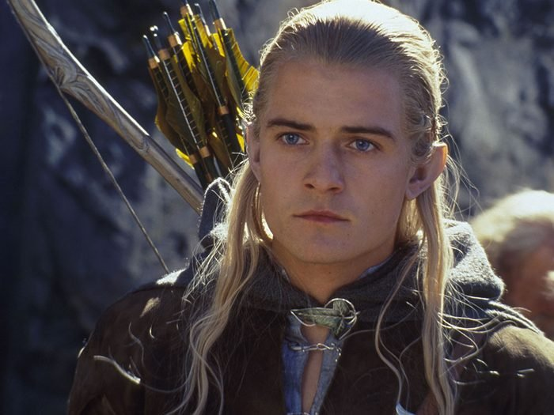
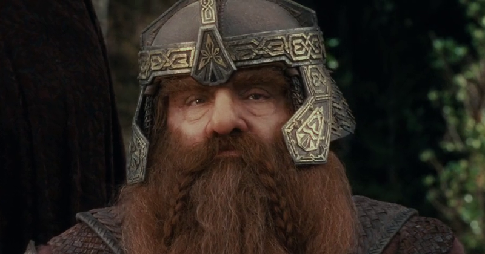
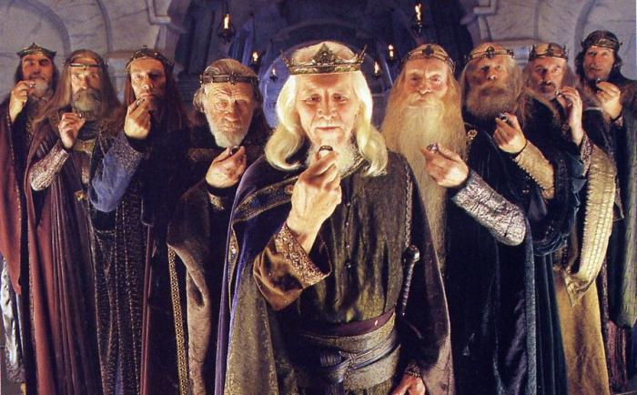
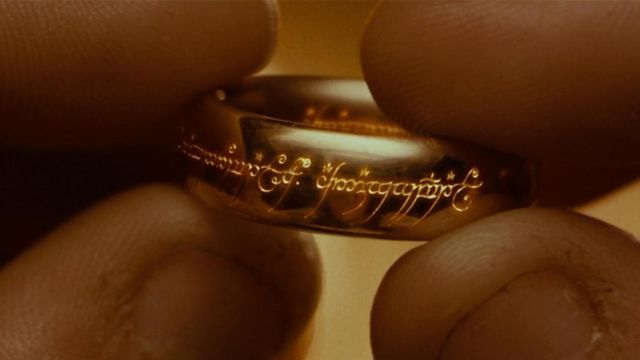

Les Trois

Les Trois anneaux des Elfes, bien qu'ils aient été forgés grâce aux connaissances acquises auprès du Maia Sauron, ne furent pas créés par lui, mais par l'Elfe Celebrimbor en Eregion pendant le Second Âge de la Terre du milieu ; bien qu'il les désirât, Sauron ne les toucha jamais.
Celebrimbor conçut les anneaux avec son propre art, ainsi qu'avec la science qu'il acquit en travaillant de concert avec les autres orfèvres du Gwaith-i-Mírdain (conseillés par Sauron) sur les Neuf anneaux des Hommes et les Sept anneaux des Nains.
Celebrimbor créa les « Trois » après le départ de Sauron pour le Mordor, quand ce dernier forgea en secret l'Anneau unique dans la crevasse volcanique du mont Orodruin, voulant avec l'Unique contrôler les porteurs des Grands anneaux de pouvoir (Les Sept et les Neuf, et donc les Trois).
Au départ, Sauron n'a pas d'influence directe sur les porteurs des « Trois », sauf quand il porte l'Unique.
Les Elfes, des êtres immortels et les « premiers-nés » d'Arda, avaient le souvenir de la disparition (durant les guerres du Premier Âge contre Morgoth) de beaucoup de beautés de la Terre du milieu, telles les grandes cités de la région du Beleriand, maintenant englouties sous la mer. Les Trois furent créés dans le but de maintenir et conserver le souvenir de ces temps anciens en Terre du milieu, et pour créer des œuvres au goût des Elfes.
Les Sept

Comme les Neuf anneaux des Hommes, les Sept furent forgés par les Ñoldor d'Eregion aidés de Sauron, vers 1500 S.A. Conservés à la Maison des Mírdain d'Ost-in-Edhil, Sauron s'en empara en 1695, après avoir torturé Celebrimbor pour apprendre où ils se trouvaient. Il les distribua ensuite aux Nains, mais ils n'eurent pas sur eux l'effet escompté. En effet, la résistance des Nains était si importante que les Anneaux ne les soumirent pas à Sauron, mais se contentèrent d'accroître leur cupidité.
Tolkien a écrit que les anneaux ne pouvaient pas rendre leur propriétaire invisible, mais les transforment en fantômes, dominent leur volonté, et prolongent leur vie en raison des traits essentiels de leur espèce. Cela a grandement contrecarré les plans de Sauron, mais au travers des anneaux, il était encore en mesure de les influencer à la colère et la cupidité.
Comme il y avait sept « Maisons » ou nations des nains, il est tentant de supposer que le roi de chaque Chambre a reçu sa propre bague, mais ce n'est pas indiqué. Toutefois, il est mentionné par Gandalf qu'une rumeur disait que chacun des sept trésors des Nains a été commencé par un anneau d'or unique. Les Nains ont utilisé leurs anneaux afin d'augmenter leurs richesses, et ces anneaux ont apporté une grande richesse à leurs propriétaires.
Les Neuf

Les Nazgûl, aussi appelés Spectres de l'anneau, Cavaliers noirs, les neuf Cavaliers, ou simplement les Neuf sont des personnages du légendaire (legendarium) de l'écrivain J. R. R. Tolkien, apparaissant dans le Seigneur des anneaux.
Au nombre de neuf, les Nazgûl apparaissent sous la forme de spectres revêtus de grands manteaux noirs, montés sur des chevaux (les Cavaliers noirs), puis sur des créatures ailées. Ce sont des hommes, anciens rois et hauts seigneurs, corrompus par le port d'Anneaux de Pouvoir donnés par Sauron, le Seigneur des ténèbres, dont ils sont devenus les serviteurs les plus terrifiants ; la peur qu'ils inspirent est leur meilleure arme.
Apparus au cours du Deuxième Âge de la Terre du Milieu (vers 2250), les Nazgûl sont dispersés mais non détruits lors de la défaite de Sauron face à la Dernière Alliance des Elfes et des Hommes. Ils réapparaissent au Troisième Âge, conduisant la guerre menée par le royaume d'Angmar contre les royaumes des Dúnedain du Nord, qui cèdent l'un après l'autre, puis face au siège et à la chute de Minas Ithil.
Au cours de la Guerre de l'Anneau, Sauron les utilise d'abord pour chercher l'Anneau, puis comme capitaines et soutiens de ses armées. Leur chef, le Roi-Sorcier d'Angmar est détruit lors de la bataille des Champs du Pelennor, les autres ensuite lors de la destruction de l'Anneau par Frodon.
L'Unique

L'Unique possède une volonté propre et peut agir dans une certaine mesure sur son propriétaire. Il peut attiser son désir au point que le propriétaire ne veuille (ou ne puisse) plus s'en séparer. Ainsi, Sméagol (Gollum) devient obnubilé par lui, et Bilbo ne l'abandonne qu'à grand-peine et avec l'aide de Gandalf ; Frodon le revendique comme sien au moment ultime. Cependant, l'anneau peut aussi trouver le moyen de quitter son porteur si c'est dans son intérêt : c'est ainsi qu'il abandonne Gollum et se « laisse » trouver par Bilbo pour quitter la caverne où il est resté inactif durant des siècles.
De plus, en mettant l'anneau, son porteur peut comprendre le langage de certaines créatures, comme lorsque Bilbo le met dans la forêt noire, il entend les araignées parler dans sa propre langue au lieu de leurs simples crissements.
Comme les autres Anneaux de Pouvoir, l'Unique prolonge la vie de son porteur, mais celui-ci devient, au fil des siècles, de plus en plus las. S'il utilise trop fréquemment son pouvoir d'invisibilité, le porteur finit par disparaître dans le monde des ombres, à l'image des Nazgûl, devenant un des Spectres de l'Anneau.
L'Unique a aussi un pouvoir de corruption sur son porteur. Même si celui-ci a les meilleures intentions au départ, il résultera finalement de ses actes des conséquences perverses et néfastes.
Présentation
Dans son œuvre, J. R. R. Tolkien va rarement dans les détails en ce qui concerne les mécanismes de la magie de son monde, et donc cet aspect de son histoire reste assez mystérieux et sujet aux spéculations.
Quoi qu'il en soit, tous les anneaux de puissance décrits par Tolkien sont connus pour accorder un grand pouvoir à leur porteur, bien qu'on ne sache pas précisément leur éventail de capacités ou leur degré de puissance, car seuls quelques aspects sont dévoilés dans les romans. Par ailleurs, il est possible que d'autres anneaux de pouvoir existent, en plus des vingts (les Trois, les Sept et les Neuf, plus l'Unique) décrits par Tolkien, car les Elfes firent de nombreux essais tout au long de l'histoire de la création des anneaux.
On sait cependant que les anneaux de pouvoir (du moins les Neuf des Hommes) empêchent les mortels qui les portent de mourir, le pouvoir des anneaux prolongeant leur espérance de vie, bien que les porteurs soient, tôt ou tard, accaparés par la lassitude et inexorablement attirés dans les ombres. En effet, en dépit des bonnes intentions initiales de chaque porteur, tôt ou tard les ténèbres prendront le dessus sur leur volonté1.
Certains anneaux (tout au moins l'Unique) accordent la possibilité de voir les choses qui sont normalement invisibles, comme le montre Frodon quand, lors de l'attaque sur le Mont Venteux, il voit les Spectres de l'Anneau sous leur véritable forme alors que l'Unique est à son doigt. Frodon est aussi capable de voir Nenya, l'anneau elfique gardé par Galadriel lorsque celle-ci lève la main, alors que son compagnon Sam Gamegie ne remarque rien, sinon une vague lumière.
On ne sait pas si ces effets ont toujours été présents ou s'ils ont été ajoutés aux anneaux après que Sauron les eut repris aux Elfes. On sait par contre que Sauron « pervertit » les Neuf et les Sept, de telle manière qu'ils furent maudits et trahirent en fin de compte tous ceux qui les utilisèrent2. Comme exemple de cette « malédiction », on peut citer la mort des nains Thrór et Thráin, poussés à entreprendre de dangereuses missions à cause de leur anneau, l'un des Sept, qui appartenait à leur maison.